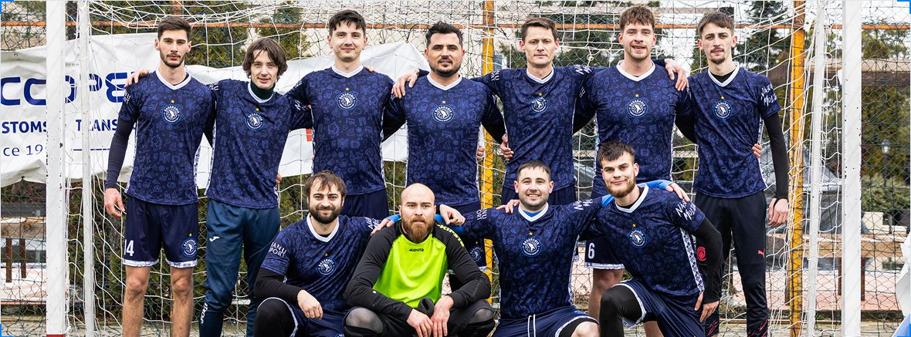

SEZON 2026/2027
FC Basarabia – o echipă de minifotbal formată din basarabeni uniți prin aceeași pasiune: fotbalul! 🇷🇴
Reprezentăm Basarabia cu mândrie pe terenurile din România, prin unitate, respect, ambiție și spirit de echipă. 💙⚽
| # | ECHIPĂ | M | V | E | Î | GM | GP | PCT |
|---|
Ne găsești pe rețelele sociale. Scrie-ne dacă vrei un meci amical, o colaborare sau doar să ne susții la următorul meci din Liga III-B.